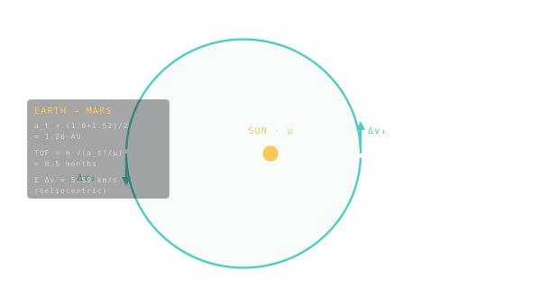

Hohmann Transfer
The cheapest two-burn trip between two coplanar circular orbits — and the baseline mission planners measure everything else against.

101 · zoom in
You're in Earth's orbit. You want to be in Mars's orbit. Both orbits are roughly circles around the Sun. How do you get from one to the other with as little fuel as possible?
The answer, worked out by Walter Hohmann in 1925, is shockingly elegant. Find an ellipse that just barely touches Earth's orbit on one side and just barely touches Mars's orbit on the other. Burn your engine briefly to leave Earth and join that ellipse. Coast for eight months without firing the engine at all — gravity does the work. When you arrive at the far end, burn again to settle into Mars's orbit. Two burns, total. Done.
It's the cheapest possible trip — but it's also the slowest. The eight-month wait is non-negotiable; physics sets the timer. Want to go faster? You can, but you pay for it: a steeper ellipse, a faster crossing, a much bigger braking burn at the other end. This is the trade you'll see playing out across every porkchop plot in /plan.
Imagine you're in a circular orbit around the Sun and you want to reach a higher one — say Earth-to-Mars. The cheapest way is a Hohmann transfer: an ellipse whose perihelion grazes your starting orbit and whose aphelion grazes the destination. Two engine burns get you there. One at perihelion to leave Earth's orbit and enter the ellipse. One at aphelion to circularise into the destination orbit.
It's the cheapest fixed-impulse path, but it's also the slowest. Earth-to-Mars takes about 259 days on a Hohmann. Want to go faster? Burn harder, fly a stretched ellipse with higher perihelion velocity. The arrival V∞ goes up, the entry burn at the destination is bigger, your total ∆v cost climbs steeply.
On Orrery's `/plan` porkchop you'll see this directly: there's a quiet basin of cool teal cells around the natural Hohmann window, every 26 months for Mars, and increasingly costly contours as you push toward shorter transit times.